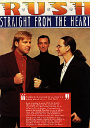

Taken from Canadian Musician -- October 1991
Rush is doing it again. With the band's 14th studio album on the racks and an impending tour, the multi-platinum trio is set to satisfy its legions of devoted fans around the world. Needless to say, a lot has been said about Rush since it released its self-titled debut in 1974 and rocketed to international stardom in the '80s. Much more can be said, but it may be better to give Geddy Lee, bassist, vocalist & keyboardist, a little breathing room. Here's the interview, taped in Toronto in July after the band completed its latest release, Roll The Bones.
CM: You just finished a new record - how did it go for you?
GL: It was probably the fastest we've made a record in some time. We say we made the record in 8 weeks, but we spent 10 weeks rehearsing and writing so the recording time was quick - that's good because that's usually the painful part.
CM: Neil Peart told me it took a day and a half to put down all the basic drums, which is incredible.
GL: We did the drums and bass tracks over a long weekend, so that was good. It's nice to know you can do them quickly, but I don't think it really amounts to anything. The bottom line is what you end up with, whether it takes you a long weekend or four weeks. I don't think it matters, as long as you get what you're after.
CM: I've listened to the record once. To me it sounds like a very joyous record, especially the opening track. There's a breath of freshness.
GL: Yeah, our intent was to express ourselves in a kind of looser, more hard rockin' way, so I guess we were fairly exuberant during our writing. The chemistry that went down was very up, and I hope that would translate onto the vinyl.
CM: As a band you seem to have found some kind of hope for continuing - that there's a real purpose for doing it and a renewed sense of identity.
GL: Yeah, I'd say that's accurate. There was definitely a "clicking in" of mental frame of mind between the three of us. When you've been in a band for as long as we have - and there haven't been very many bands that have been around as long as we have - you go through many different frames of mind. Sometimes the three of you are just not in sync. You think you are and you act like you are but you're really not - I think sometimes that shows in the stuff you write and the way you behave on stage and the way you tour. Other times you're very, very much of one mind.
Fortunately for us we're really at home when we're writing - that's the moment where the three of us are most happy and the most in sync with each other. This time we found ourselves at home in that writing stage with more of a united purpose. I don't know if that makes any sense to an outsider. It's a subtle difference, but a very profound difference in the kind of energy that you're willing to put into the project. 
CM: Is that perhaps one of the reasons why you think Rush has held together as long as it has?
GL: I think we've stayed together fo a lot of reasons. One, we're all pretty soft-spoken and we don't have a tendency to blow up in each other's faces. Good or bad, I think that means if something's going on in the band and you're not happy about it, before you freak out you think about it. It's just our nature. We're a little more introspective as individuals and I think that lends itself to longevity.
On the other side of it (away from the personal side), there's a very strong musical vision that is always, or almost always, very united. So you get these three people that have had, say, six months off and have gone through completely different experiences on their own, and then you sit them down together and you think: "My God, how are these three people going to decide on what to write; how are they going to have any point of reference anymore?", because their individual lives are quite different. But time and time again, we want to do the same kind of thing. Our musical goals are frighteningly aligned. I think those two factors are really the only factors that have kept us together for that long.
CM: On the new album you've once again used Rupert Hine as a co-producer. Why did you use him and how is he in sync with what you're trying to express? What are his strengths and his contributions to the record?
GL: We had a very pleasant expreience on Presto working with Rupert. He and his engineer Stephen W. Taylor are professional, very congenial, extremely musical and we found things went very smoothly and very quickly. It was an efficient process.
I think we're fairly capable of producing ourselves, but we need that extra little sounding board - that person who we can bounce ideas off of and sometimes contribute with an idea that we would never have thought of. But for the basic writing and arrangements on the last two albums, I think there's been very little [difference], in a fundamental sense, from before we had producer's input to after. There's a confidence that the songs that we're writing are in fairly good shape by the time the producer comes in.
So the producer, for us, helps us with feel in terms of putting a record down and making sure that our fanatacism in terms of tightness and perfection does not overwhelm the song from feeling good. I think that's something we've learned from Rupert to a large degree and I think that's probably, to my mind, his strongest influence on us over the past two records - even though the track may not be 100 percent tight in terms of a microscopic view, that's not really the issue. The issue is making the song feel good and making the performance feel right.
I think we had a tendency to be almost sterile in the way we went about putting together a performance. I mean we were very adamant about tightness to the millisecond between bass, drums and guitar. Super, super, super tight - beyond, in some people's opinion, anybody else's ability to hear the difference.
So I think he's brought more of a feel... helped us be more aware of when a song is feeling good from us. It's created a bit of a looser vibe and I ike that a lot. So, his overseeing the performances going to tape has been very helpful to us and his contribution in terms of vocal arrangements and things like that, to me, are Rupert's strengths.
Both [Hine and Taylor] are musicians so they understand an appreciate everything you're doing regardless of how complex it is. That helps cut down a lot of time and wasted energy in the studio. They're a very musical-efficient team and they complemented over the last two records the job that we had already done as co-producers.
CM: I find that you're using the word "efficient" quite a lot. You obviously live by your own rules, because you've been together for this long and have done so much. Efficiency must mean a great deal to you and the rest of the band with the way you run things.
GL: Well, just in the fact that we've been a band that's been together for a long time. Time is very important to us. Personal time, home time, family time.
CM: And yet you've done so much.
GL: Yeah we have, but as we progress, and, I hesitate to use the phrase, as we get older, those things are important. When we're together in a studio we want to make sure we're not wasting our time. We don't mind working - we like to work and get down to it, but we don't want to sit around the studio twiddling our thumbs and frittering away time when we could be doing something else, which at that point could be more important to us. So we want to make sure that there is a sense of of efficiency and we are making the most of our hours there.
When we were younger, we did albums in residential studios and we were working 24 hours a day. We'd work all night and we would spend a long time making records and it was... it was the lifestyle. It's not any longer. Now it is a way of getting our music on tape and we want to make sure we have a good time doing it, but we want to make sure it gets done right and then we're out of there, onto the next thing.
CM: You're efficient in another way - musically. You're a trio that sounds like a 10-piece band. You use all your talents very efficiently. Neil writes the words, you and Alex write the music, and the way you put it together sounds like a gigantic rock orchestra - and there are only three of you. You're not adding people - there's never been a fourth member of Rush. You've sparsely used even background vocalists.
GL: Yeah, we have been pretty self-sufficient over the years. Whether that's good or bad I guess only time will tell...
We are very much a closed circle - it's just the three of us. Sometimes I think that's unhealthy. When we can have somebody new in the control room - whether it be a producer, engineer, keyboard player, string arranger, vocalist - all these things help teach us something. And that is something I think that we probably did not do enough of in our earlier years. As a result, I think that's why every couple of records we seem to be changing producers. Just for the sake of moving on and learning more. There's else somebody out there that can bring some fresh influence to the band.
CM: You're talking about influences now and people influencing you. How much do you listen to and get influenced by what's happening outside of Rush musically? You've seen popular music change radically since you began. How much do you let that affect what you're putting out right now?
GL: Right now there's very little influencing me in terms of rock. I don't listen to very much contemporary music at the moment - there's just not very much that catches my fancy. I seem to be listening to old records and things that are very different from what I'm doing. I listen to classical records, I listen to Billie Holliday, I listen to Louis Armstrong: all kinds of stuff that really has nothing to do with what I'm doing at the moment, aside from the rock bands that I really like a lot, like The Cure, Simple Minds, Talking Heads - I always have time for those bands.
Nonetheless, there are different times in our past where we have been very influenced by what's going on. It was the late '70s when bands like The Police - there was a heavily rhythmic influence on rock and pop that we liked a lot and we reacted to. We wanted to be part of that movement and learn from [it]. That was a big influence on us.
In the early '70s when we first started, we were pretty heavily influenced by a lot of the progressive rock bands like Yes and Genesis. So we started off being very influenced and at different times there are different kinds of music that do influence us. But I think we're always being influenced that we listen to, whether it's contemporary or not.
In one way or another, as a musician, you're always listening and you're always asking the same questions to yourself as you're listening to a piece of music. So I think it's very hard for an active musician not to be influenced by what he's listening to, whether it be in an overt way or a very subtle way. I think it always goes down and as I say at the moment there's no great contemporary influence, but there are probably 10 or 12 more subtle influences that are affecting each one of us in our own way.
CM: I asked you that question because I noticed on the title track, Roll The Bones, there's quite a funky groove to it and there's, what appears to be, a little bit of rap in the middle of it. So I was wondering if you were stretching out and exploring that area as it pertains to the success and the popularity of that musical form today.
GL: Yeah. I guess that track is something that was influenced by more of the spoken word stuff that is going on, although I can't sit here and say I'm a fan of rap. I like some rap things, but a lot of I don't like. I think there's some of it that's really well done - there are some clever people out there. But it's also not a new influence.
People are talking about rap music like it's something new - it's not new at all. It's been around for over a decade, if not always in one form. And there are songs, like "Territories", where we have used a similar kind of thing, although it was never related to rap because it wasn't the music of the moment - so we have used spoken word sections before.
This one is written more from Neil's point of view. The lyrics were written very much in concert with contemporary rap music: the way the words react against each other and the structures form more in sympathy with what's going on in a contemporary rap way. To a degree we are having fun with that. We couldn't make up our minds really if we wanted to be influenced by rap or satirize it, so I think that song kind of falls between the cracks and in the end I think it came out to be neither, it came out to be something that is very much us.
CM: It definitely sounds like Rush.
GL: I guess with the three of us it's pretty hard not to. I mean there are certain elements of our sound that are kind of inimitable at this stage.
CM: You rely a lot on technology. How much does the technology you're using affect your songwriting? Is there an experimental element to the technology that you use?
GL: Yeah. It's definitely experimental. I think technology has a great effect on what we do - less of an effect now than perhaps records of the past. The last two records were rebellion, in a sense, against the technology that we kind of got locked into. With Hold Your Fire and Power Windows we were so technology oriented. We were really after a marriage of synthesizer technology and hard rock. Those records were experiments in balance of those two, and that experiment started with Signals, really. That was the first major experiment.
After Signals was finished, we felt it was kind of a failure in getting the right balance. With Grace Under Pressure we still felt we were experimenting with that balance; with "Subdivisions" we felt like we leaned too heavily into keyboards and ignored the guitar aspect of it. With Grace Under Pressure we felt felt we over-reacted too much the other way.
With Power Windows and Hold Your Fire we felt we kind of achieved the balance. So because we'd gone through literally four records of trying to balance those two things out I think by the time we came to write Presto and this record we didn't want to know anything about being restricted to a concept. We just wanted to write.
As a writer I hesitated going to my keyboards, hesitated going to my sequencers - always thought of first writing from a vocal and guitar point of view. So if those four albums were experiments in guitar/synthesizer balancing, then these last two records have been a bit of a return to our fundamental - I hesitate to use, return to basics, because I don't think we ever do have a "back to basics" approach - trio attitude with the experimenting all done in the vocal area.
Melodically I think these last two albums are much different than something we could have done four or five years ago. The vocal layering and the influence that writing around a vocal melody has on the rest of the song has been really what these two records fo me have been about as a writer, and I think the band as a whole.
CM: So you're feeling fairly stable with the balance that you've manged to create.
GL: Yeah, I guess to wrap it up correctly, the last two records have been freer attempts at writing - less confined. There are incredible orchestration and textural possibilities when you're locked into using sequencers and synthesizers. It's a great sonic advantage, but there's also an emotional and feel restriction when you get too locked into that technology, so these two records (and particularly this one) have been a bit of a revolt against that restriction to create a freer sound with the band.
We will use [technology] as a way of enhancing our songs as opposed to it being the fundamental song itself. And this is coordination with an interest in experimenting with vocal melodies and layering - again a more organic approach to writing.
CM: How are you going to reproduce that vocal layering and the much more complex vocal stylings in a live situation?
GL: Well, a lot of that is very difficult. You see, the freer we get in the studio the more it creates a hell-on-earth onstage. It was very difficult last tour. Obviously Alex has to be a lot more involved in singing back-up, and there's always the decision of what parts to sequence and what parts to use backing sampling and things like that. So it's a very difficult thing and I'm not quite sure how we're going to achieve it for the next tour, although last tour we got quite a good balance between Alex and electronics helping us out. There were certain things on the last tour that were very heavily animated so there were moments where soundtrack on film took over certain moments of our songs and we'd come back in afterwards. It's kind of a mixed media thing. Because we're so heavily involved in using sampling and sequencing machines and audio visual stuff it's very much a combination of technology and human beings on stage when you go to a Rush show. It's a marriage of the two. And all of that fuss is just to avoid adding another person onstage.
There's nothing that we use onstage that's triggered by anyone else, because there's this kind of unwritten code that if we're going to use a sampled piece or a sequenced piece it has to be triggered by us, which is why we have this elaborate foot pedal setup. Nothing happens without some connection to performance for us. So you have to be there and if you have a small rhythmic sequence that's going to be playing, somebody has to trigger it at the right time - it's more of a choreography of technology.
You've got to be there at the right time, you've got to trigger it in time, you've got to add that element of performance, and if you screw up you can't use the part, so no matter how complex our show gets in the use of technology, we make sure that there has to be that element of human error that makes the difference. You have to be able to trigger it. It has to be connected to us in some way.
CM: It seems like you're making it very difficult for yourselves when it could be done a lot easier. You say it's an unwritten rule in the band, but...
GL: Yeah. It could be a lot easier with another person. And I don't know why... We talked... Before the last tour we had very serious talks about adding another member.
CM: Just for the tour?
GL: Just for the tour, yeah - not in the band. But we came to the conclusion that our fans would rather see us use technology to try to pull it off than have somebody else on the stage. And I really think that that was the main reason why we opted to try to do it ourselves. We figured that people who have been coming to see us for 15 years would rather see us up there fighting our way through the show than hiring somebody else. We figured that technology was a more acceptable answer than not being a three-piece.
CM: You mentioned your marriage between technology and the human element. How much do the visual aspects come in? Do you get very involved in that personally?
GL: Yeah, very involved. Personally I have a lot of input into the film portions of our show. In the past, lighting effects and all those things have always been left to our lighting designer. But as far as the use of animation - that's something I'm very interested in. I'm pretty proud of the kinds of animation we've put together over the last few years because we've used some very talented artists in town here and I think we've achieved some really unique pieces of work that I think stand up. And it's an area that I'm very interested in and have a lot of fun doing.
CM: And you also have a lot of personal input into the videos that you put out as well.
GL: Well, I have as much as will fit. Sometimes we work with the director; sometimes we let them do the job because they have a very strong sense of where the project should go; other times you have to put in a lot more; and sometimes you want to put more in, so it really depends.
I figure that some of our videos have been very successful, some of them haven't. It's never a completely satisfying experience for me because there are so many limitations. It's such a strange thing, this video - it's gotta be too practical to be considered really a piece of art, although you can be very artful about doing it.
It's basically a commercial for your song. There's something about that that really kind of turns me off from the word go. And depending on the director you're using, you know they usually have very little feel for the music itself and that kind of bothers me. So it's very rare that we've used the same director twice.
CM: We were talking a little bit about influences before. I want to do a little extension of that: Rush seems to be in a certain niche in the musical sphere that no-one has been able to duplicate.
GL: Or want to? (laughter)
CM: I don't know about that... You have a lot of fans and you're very popular not only in Canada, but also on the international scene. You must have come across many instances where someone will come up to you and say, "You've really done a lot for me in my musical career and one of your records changed my life. It made me decide to do this and this." How do you react to something like that?
GL: It's a difficult thing to react to in any real way because you're gratified that what you've done has had some effect on that person, although the intention was not to change their life - just to entertain them.
The fact that they've taken something you;ve done very seriously is kind of a double-edged sword. You're complimented that, but at the same time you can't let it go beyond that kind of compliment. Otherwise you start thinking of yourself in much too serious a light. Like, "what I'm doing affects someone's life."
You can't think like that because it affects the way you write. It allows part of your ego to become awkwardly large. It's not for any great reason to be a humble guy, it's just that the more out of proportion your ego gets, the harder it is to do a good job; the harder it is for you to be in touch with what it is about your music that works and doesn't work. Likewise what it is about your personality that is happening or not happening. So to take those kind of compliments too seriously I think damages your ego. People say it pumps you up, but I think that's wrong. I don't think it helps you in any way as a person, and I think it can have a very negative effect on you as a writer.
CM: Perhaps you'd also have a sense of responsibility. It would tag you; you might think: "Oh, I'm responsible for that." It might make you feel uneasy.
GL: Yeah that's true. You want to feel the freedom of being able to do what you want. A complaint that I get a lot from fans is: "Why don't you do this record again... how come you don't sound more like Moving Pictures or 2112, or how come you don't play like Hemispheres any more??"
It's very hard to explain that thing - you kind of have to be making records or writing music for a long time to understand it. It just doesn't come out. You've got other things that interest you and you want to keep challenging yourself, but it's not this big decision to keep challenging yourself. It's a very natural thing. You go in the studio and you just start writing. We get together, and we just start writing. So what you end up with has a lot to do with who you are at that point in time. So you cannot sit there and go, "OK, let's write Moving Pictures all over again - let's go back in time 10 years and see if we can capture that feel".
That would be somehow dishonest to everything you've done since then and it would feel like you were just going through the motions - and you cannot stay a band for very long if you're just trying to capitalize on some successful moment moment you've had in your past and build your future on your past.
It's all stepping stones. I still like to think that we haven't made the best record we can make. I still like to think that we're looking for that real fabulous combination of performance and writing and feeling that will make a timeless record. But I don't think you can do that by looking over your shoulder.
CM: Despite your personal philosophy on making records and the changes you've made, you've managed to maintain a sound which is distinctly Rush.
GL: I think that's because it comes from your hands. A lot of people are afraid to change producers. We used to be like this. We said, "Well, we can't change producers because our sound will change." And then suddenly you change producers; your sound changes a little bit, but it doesn't really change - the heart of it is still the same.
Here we are, four or five producers past Terry Brown, and we still sound like Rush. Well, why is that? That's 'cause we are Rush, because the combination of the three of us working together, our fingers on our instruments, has a particular sound that you really can't erase. Our views of music and our style of writing are so much us that I don't think you can squash that - you really can't take it away from us.
It's just the way we are - it's the way we sound. I think musicians have to have a lot of confidence in themselves - if they have a sound to call their own they shouldn't be afraid of working with other people or be afraid anyone can take that sound away from them as long as they have a strong sense of where they're at as a writer and as a musician. I don't think they should be scared of that kind of change because their sound comes from their fingers - it comes from their way of thinking.
There's a running joke about us doing solo albums," Neil Peart says cheerfully. "Lucky there's only three of us."
As Rush's lyricist and percussionist, Peart is privy to one of the most popular and longest running rock icon bands in the world - but you wouldn't know it to talk to him on the phone.
"We work under a kinda superstition - an element of change is critical for us. We feel there's no sense of guarantee at all," Peart says, referring to his many years of hard work and dedication to the precarious craft of musicianship.
"As a young musician you're used to disillusionment and disappointment. You're disillusioned and disappointed so many times; even when I had a chance to join this band... I never thought it would turn out this way."
"This way", as Peart describes it, is pretty much on the top of the heap in terms of Rush's musical success.
"I always think of Rush widely spread on musical influences - from African, to hard rock, to Toronto R&B. There are no areas of frustration."
Then there is Peart's personal contribution to the art of rock drumming, something not to be trifled with as he has earned the respect and admiration of his peers and fans around the world.
"I don't need to practise every day any more. After 25 years it doesn't go away. If I leave drumming for a few months I sit down at the same level I left at; I just have to build up the calices again."
Pulling his weight not only as an extremely effective drummer, Peart has also been Rush's wordsmith practically since the day he joined the band.
"Lyric writing is as technical as drumming is, and should be approached with purpose and discipline," Peart says. "I'll sit and stare and a blank sheet of paper for three days if that's what it takes.
"I have long discussions with Geddy about which type of lyrics work and which don't. I'm very sensitive to where the vocalist may be, and if I want to punch up or drop out.
"I realize that sometimes the lyrics are secondary. Lyrics used to be so good and so finely crafted in the '30s and '40s - no one would put out second rate lyrics. Then the '50s came out with things like 'Be-bop a-lula'. A sense of craft and care is not definable... I please myself with structure, but realize that it doesn't matter."
With the release of Roll The Bones and a massive tour just around the corner, Peart is, as he surely has been during his long association with Rush, genuinely enthusiastic about what the future holds.
"We're driving full bore; we've moved our plans way up. You have to create your own challenge; make it dangerous; keep it exciting. You can't let the excitement go away.
"We've learned not to take anything for granted. We don't know, but we can hope. That's something you can't allow to die."
{kind=link}